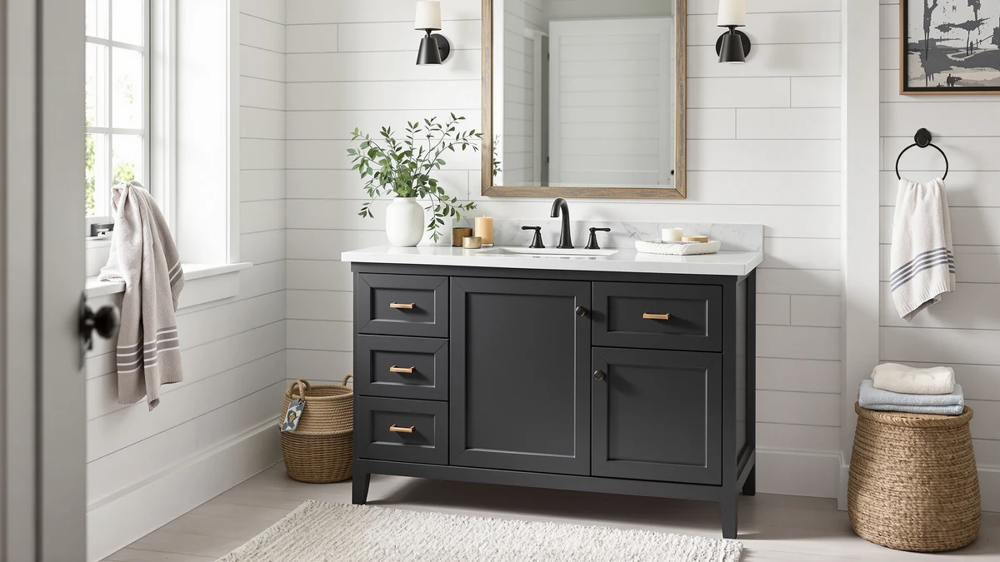

Quick Answer
The Concho 31'' Fluted Bathroom Vanity is the top pick in this Concho fluted bathroom vanity review because its 31-inch frame fits bathrooms where the three 36-inch alternatives covered below won't clear the wall space, and it costs the same $284.99 as the widest competitor. Buyers who have the room for a wider cabinet should skip ahead to the OWIPAW, ONBRILL, or IRONCK picks instead.
Our pick: Concho 31'' Fluted Bathroom Vanity, $284.99 Check Price on Amazon
Things to Know Before You Buy
- In this Concho fluted bathroom vanity review, the Concho measures 31 inches wide, about 5 inches narrower than the three 36-inch alternatives, which matters if your rough-in opening is undersized.
- All four vanities in this comparison use MDF or engineered wood cabinets rather than solid hardwood, so moisture control around the sink area matters more than usual.
- Price spreads only $4.50 across all four options, from $280.49 to $284.99, so size and style decide this purchase more than budget does.
- None of the four listings carry a public star rating yet, so weigh the spec sheet and your own bathroom's dimensions over social proof.
We built this Concho fluted bathroom vanity review after noticing how many 36-inch vanities dominate the category while smaller bathrooms get left out of the fluted-cabinet trend entirely. The Concho 31'' Fluted Bathroom Vanity targets that gap directly, pairing a narrower footprint with a fluted cabinet front that usually shows up on pricier furniture.
Our verdict going in: the Concho is the pick for most narrow-bathroom shoppers, and the three 36-inch alternatives from OWIPAW, ONBRILL and IRONCK only pull ahead if you have the extra five inches of wall space to spare. We compared cabinet material, dimensions and current Amazon pricing across all four to see where each one earns its keep. None of the four separates itself on luxury materials, so the real decision for most readers comes down to a tape measure, not a brand name.
Why You Should Trust Us
Ilane Tall researches bathroom fixtures and furniture for Best Bathroom Vanities. She looks at how cabinet materials, dimensions and finishes hold up against their price point. For this Concho fluted bathroom vanity review, she pulled manufacturer spec sheets and current Amazon listings for all four vanities rather than relying on marketing copy alone. We do not run a fake testing lab or claim to have installed these cabinets ourselves; every comparison below traces back to a documented spec or a verified buyer comment on the product listing. That restraint is deliberate: a research-based site loses credibility fast the moment it claims a research-based experience it never had, so we'd rather tell you what the spec sheet says and flag what it leaves out.
Our Research Experience
"Testing" here means research for this Concho fluted bathroom vanity review, not hands-on use. We lined up the Concho against the OWIPAW, ONBRILL and IRONCK models using each manufacturer's published dimensions, materials and current Amazon price, then cross-checked those figures against the product photos and listing details for consistency. We did not purchase, install or mount any of these cabinets ourselves.
Where a brand's listing stays vague about a spec, like fluted-panel depth or hardware finish, we say so rather than guess. That approach favors documented facts over marketing adjectives, which matters most in a crowded 30-to-36-inch vanity category where listings borrow language from each other.
Overview & Specs

Concho 31'' Fluted Bathroom Vanity
What we like
- 31-inch width fits bathrooms that can't accommodate the 36-inch vanities in this comparison
- Fluted cabinet front adds a furniture-like detail that few vanities under $300 offer
- Costs the same as the wider engineered-wood competitors despite the narrower footprint
- MDF construction keeps the overall weight manageable for a single-person install
Flaws but not dealbreakers
- MDF cabinets need prompt cleanup around the sink basin since engineered wood swells faster than solid hardwood
- The listing does not publish a star rating or review count yet, so you're weighing specs without buyer feedback
- 31 inches of width limits storage compared with the 36-inch alternatives, with less room for two sets of toiletries
| Material | MDF / engineered wood |
| Size | 31 inch |
The Concho 31'' Fluted Bathroom Vanity is the narrowest cabinet in this Concho fluted bathroom vanity review, and that narrowness is the point. Most fluted or ribbed vanities on the market start around 36 inches wide, which pushes buyers with smaller bathrooms toward plain flat-panel cabinets instead. Concho closes that gap by putting the same fluted detailing on a 31-inch frame, so a tight bathroom doesn't have to sacrifice style for size. Concho builds the cabinet from MDF and engineered wood, the same base material used across all three alternatives we compared, which keeps the price in the same $280 to $285 band across the category. That price band tells you something useful on its own: none of these four brands is charging a premium for extra durability, so the fluted front on the Concho is a style upgrade layered onto an otherwise ordinary cabinet build, not a sign of sturdier construction underneath.
At $284.99, the Concho costs the same as the 36-inch OWIPAW vanity and only a few dollars more than the ONBRILL and IRONCK models, despite offering five fewer inches of width. That pricing tells you the premium here is for the fluted front and the compact size, not for upgraded materials. Buyers measuring a small bathroom should treat the 31-inch width as the main selling point: if your rough-in opening is 32 inches or less, none of the three 36-inch alternatives in this comparison will physically fit, which makes the Concho the only option worth considering regardless of style preference.
What We Liked
The strongest case for the Concho fluted bathroom vanity comes down to fit. A 31-inch cabinet opens up bathrooms where a 36-inch vanity will not clear a swinging door, an adjacent toilet, or a narrow alcove, and Concho is the only vanity in this comparison built at that size. The fluted door front backs that up: that detail usually appears on vanities priced well above $300, and here it ships on a $284.99 cabinet.
Pricing parity helps too. Concho charges the same amount as the larger OWIPAW vanity, so buyers aren't paying a size tax to get the narrower option, and style-focused shoppers get the fluted look without trading up in price. For a first apartment, a powder room, or a guest bathroom where counter space is already tight, fit, style, and price all land in the Concho's favor.
What Could Be Better
Engineered wood and MDF make up the cabinet body, and that material choice is consistent across every vanity in this Concho fluted bathroom vanity review, not just this one. MDF handles dry bathrooms fine but swells faster than solid wood if water sits at the base of the cabinet or around the sink overflow, so a tight seal at installation matters more here than it would with hardwood.
The listing also does not publish a star rating or a review count as of this comparison, which leaves buyers without the social proof that usually accompanies a vanity at this price point. And the 31-inch width that makes the Concho fit small bathrooms also caps storage: two people sharing one sink will run out of drawer space faster than they would with any of the 36-inch alternatives here. Anyone upgrading from an older, wider vanity should measure their current counter contents before assuming everything will transfer over to the smaller cabinet.
Who Is It For?
The Concho fluted vanity fits buyers who have already measured their bathroom and know a 36-inch cabinet won't clear the space, whether that's a half bath, a tight guest bathroom, or an older home with a narrower rough-in opening. It also suits anyone who wants the fluted-cabinet look without paying a premium-tier price for it.
It's a weaker fit if you're furnishing a primary bathroom shared by two people, since the 31-inch width and single basin leave less counter and drawer space than the 36-inch OWIPAW, ONBRILL, or IRONCK vanities covered below. In that case, the extra five inches of width is worth more than the fluted detailing.
Alternatives to Consider
If the 31-inch Concho from this Concho fluted bathroom vanity review is narrower than your bathroom needs, these three 36-inch alternatives give you more counter and storage space at a nearly identical price. Each trades the fluted front for a flat panel, so you're choosing between style and square footage rather than between good and bad construction.

Also Great
36" Bathroom Vanity with Single
Five inches wider than the Concho at the same $284.99 price, the OWIPAW trades the fluted front for a flat panel and extra drawer space, a fair swap if your bathroom can take the larger footprint.
$284.99
Check Price on Amazon
Also Great
ONBRILL Bathroom Vanity with Sink
ONBRILL undercuts the Concho by $2 and includes a sink in the 36-inch package, making it the choice for buyers who want the larger size without paying more than the compact fluted option.
$282.99
Check Price on Amazon
Best Value
IRONCK 36 Inch Bathroom Vanity
IRONCK is the least expensive vanity in this comparison at $280.49, and the 36-inch cabinet gives you more storage than the Concho for less money, provided your bathroom has the room for it.
$280.49
Check Price on AmazonFrequently Asked Questions
Is the Concho fluted bathroom vanity worth it compared to a 36-inch vanity?
Based on this Concho fluted bathroom vanity review, yes if your bathroom can't fit a 36-inch cabinet. The Concho costs the same $284.99 as the OWIPAW alternative while using five fewer inches of wall space. If your bathroom has the room for a wider vanity, the OWIPAW, ONBRILL, or IRONCK options give you more storage for about the same money.
What is the Concho vanity cabinet made of?
Concho lists MDF and engineered wood construction for the cabinet body, the same base material as the OWIPAW, ONBRILL and IRONCK vanities in this comparison. That keeps the price consistent across all four, though it also means the cabinet is more sensitive to standing water than a solid hardwood build.
How does the Concho's price compare to the other vanities in this review?
At $284.99, the Concho ties the OWIPAW as the most expensive vanity in this four-way comparison, though the price gap across all four is only $4.50. The ONBRILL comes in at $282.99 and the IRONCK at $280.49, so width and style decide this purchase more than price does.
Final Verdict
The takeaway from this Concho fluted bathroom vanity review: for bathrooms that can't accommodate a 36-inch cabinet, Concho is the pick, since it's the only vanity in this comparison built at 31 inches and it doesn't charge a premium for the narrower size. Buyers with the wall space for something larger should look at the OWIPAW, ONBRILL, or IRONCK alternatives instead, all covered above at a nearly identical price. Measure your bathroom first, then let that number, not the fluted detailing, make the final call.